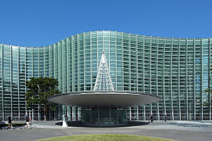
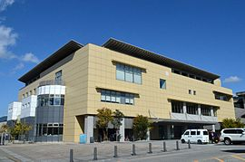

| 場景 |
|---|
| 劇中男主角立花瀧的平日活動區域大量採用東京都一帶實有的場景。如他平日通勤上學往返為新宿車站與四谷車站，劇情裡他與奧寺的約會段落中則安排了六本木新城的展望台、國立新美術館、以及新宿的外苑區域出現，在三葉前往東京尋找瀧時有採用夕陽時的代代木車站景色，結尾前已出社會的瀧與三葉則在千駄谷站互相找尋對方；並且以位於四谷的須賀神社前階梯處作為最後收尾場景。 三葉所居住的糸守鎮雖在設定上是位於飛驒一帶的虛構城鎮，但劇中瀧一行人前往糸守鎮時則有取用飛驒古川站以及該車站附近的實有場景；包括位於後站的氣多若宮神社、前站的飛驒市圖書館、以及飛驒古川站北方靠近角川站的落合巴士站（落合バス停）等。而糸守湖場景來源則是諏訪市一帶的諏訪湖作為參考 |
| 四谷車站是劇中接近瀧的居所、以及與奧寺會面的地點。 | 被安排展示飛驒景色照片的國立新美術館。 | 瀧調查糸守鎮遭流星撞擊事故資料的飛驒市圖書館。 | 糸守湖的範本諏訪湖。 |
|---|---|---|---|
|
 |  | |